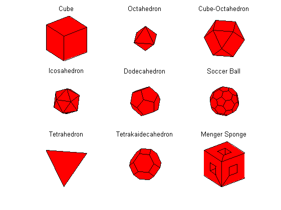

function demoPolyhedra(varargin)
figure;
subplot(3, 3, 1);
[v f] = createCube;
drawMesh(v, f);
view(3); axis('vis3d'); axis off;
title('Cube');
subplot(3, 3, 2);
[v f] = createOctahedron;
drawMesh(v, f);
view(3); axis('vis3d'); axis off;
title('Octahedron');
subplot(3, 3, 3);
[v f] = createCubeOctahedron;
drawMesh(v, f);
view(3); axis('vis3d'); axis off;
title('Cube-Octahedron');
subplot(3, 3, 4);
[v f] = createIcosahedron;
drawMesh(v, f);
view(3); axis('vis3d'); axis off;
title('Icosahedron');
subplot(3, 3, 5);
[v f] = createDodecahedron;
drawMesh(v, f);
view(3); axis('vis3d'); axis off;
title('Dodecahedron');
subplot(3, 3, 6);
[v f] = createSoccerBall;
drawMesh(v, f);
view(3); axis('vis3d'); axis off;
title('Soccer Ball');
subplot(3, 3, 7);
[v f] = createTetrahedron;
drawMesh(v, f);
view(3); axis('vis3d'); axis off;
title('Tetrahedron');
subplot(3, 3, 8);
[v f] = createTetrakaidecahedron;
drawMesh(v, f);
view(3); axis('vis3d'); axis off;
title('Tetrakaidecahedron');
subplot(3, 3, 9);
[v e f] = createMengerSponge;
drawMesh(v, f);
view(3); axis('vis3d'); axis off;
title('Menger Sponge');
